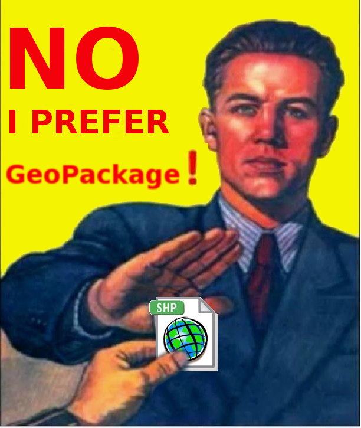

Геоинформатика и геоинформационные системы. Лекция 2
Фактически любые данные, которые содержат сведения о местоположении объекта.
Но, если говорить формально
пространственные данные (spatial data): Данные о пространственных объектах, включающие сведения об их форме, местоположении и свойствах, в том числе представленные с использованием координат.1
пространственный объект (feature): Цифровая модель материального или абстрактного объекта реального или виртуального мира с указанием его идентификатора, координатных и атрибутивных данных.
атрибут пространственного объекта (feature attribute): Характеристика пространственного объекта.
Дискретные пространственные объекты имеют четко определенные границы.
Например, административные границы, здания, точки притяжения, земельные участки.
Непрерывные данные представляют собой поверхность (или поле), в каждой точке которой известно значение параметра и не имеющая четких границ.
Например, рельеф, значение гравитационного поля
Это и определяет два основных типа пространственных данных - векторные и растровые.
Источник: https://rsgislearn.blogspot.com/2007/05/vector-data-vs-raster-data.html
Информация в растровых данных содержится в пикселях - от английского picture element или pix element. Одним из ранних названий было pel (им в основном пользовались в Bell labs - Лабораториях Белла).
На заметку
Первыt ГИС использовали только растровые данные, так как на тот момент это был единственный способ отображения чего-либо на экране. Векторные специализированные форматы появились только в 80-х годах.
Важно
Точность растровых данных ограничена их разрешением, то есть размером пикселя: чем меньше пиксель, тем более качественным будет изображение. При этом с уменьшением размера пикселя возрастает размер файла, в среднем размер файла будет возрастать в геометрической прогрессии (то есть при уменьшении пикселя в 2 раза, размер файла возрастет примерно в 4 раза).
Но здесь, как правило, стараются найти компромисс между качеством данных и размером файла.
GeoTIFF - открытый формат представления растровых данных в формате TIFF совместно с метаданными о географической привязке (геореференцированный растр).
Использует спецификации TIFF 6.0, в которую добавляет несколько видов геотегов, которые определяют вид картографической проекции, систему географических координат, модель геоида, датум и любую другую информацию, необходимую для точного пространственного ориентирования изображения.2
Приложения, поддерживающие только формат TIFF 6.0, но не GeoTIFF, могут открывать изображения, получая базовый растр без метаинформации.
В тегах GeoTIFF может задаваться:
Вид картографической проекции или систему географических координат
Параметры (датум) земного геоида
Дискреты разрешения изображения
Матрицу полиномиального, сплайнового или аффинного преобразования
Характерные параметры изображения
WMS (Web map service) - это протокол получения через Интернет географически привязанных изображений, которые генерируются картографическим сервером на основе базы данных.3
В векторных данных для задания местоположения используются координаты объектов и математические формулы для задания формы.
Специализированные форматы, предназначеннные для ГИС, разработаны так, чтобы они могли совмещать в себе сразу и геометрию, и атрибутивные данные (непространственные характеристики).
Главная особенность векторных форматов данных, используемых в ГИС в том, что они позволяют не только определять местоположение и геометрию обьектов, но и также их описательные непространственные характеристики (то, что, как правило, называют атрибутивными данными). Кроме того, большинство из этих форматов поддерживают работу с различными картографическими проекциями и системами координат.
Например, системы автоматизированного проектирования (AutoCAD, NanoCAD и подобные им) также могут работать с геометрическими характеристиками объектов и их местоположением, но работа в них осуществляется только в плоской прямоугольной системе координат, а возможность работы с атрибутивными данными отсутствует.
Наиболее часто используемым форматом векторных данных в ГИС является shapefile4. Этот проприетарный формат данных от компании ESRI, который был разработан ими в 90-х годах прошлого века. Это был первый формат векторых данных, созданный специально для работы в ГИС.
При использовании этого формата данные хранятся в нескольких файлах с разными расширениями, обязательными из которых являются:
- .shp - геометрия объектов;
- .shx - файл индексов необходим для ускорения расчетов и связи геометрии и атрибутов;
- .dbf - таблица атрибутов:
- .prj - сведения о проекции и системе координат.
Предупреждение
Как минимум для корректной работы необходимы первые три файла. Файл .prj формально не является обязательным, но без него ГИС не сможет определить, какая система координат используется.
Недостатки работы с shape файлами5:
в файле не задается система координат;
состоит из нескольких файлов;
названия атрибутов должны быть не длинее 10 букв;
всего можно добавить не более 255 атрибутов;
ограниченное количество типов данных в атрибутах;
файл должен быть не более 2 Гигабайт;
не описываются топологические отношения объектов;
в файле могут быть только объекты с одним типом геометрии;
и прочие.
Вот здесь еще можно посмотреть презентацию про shape файлы и их альтернативы https://www.slideshare.net/jachym/switch-from-shapefile
GeoPackage6 - это контейнер SQLite, а стандарт кодирования GeoPackage определяет правила и требования к контенту, хранящемуся в контейнере.

Стандарт GeoPackage определяет схему, включая определения таблиц, утверждения целостности, ограничения формата и ограничения содержимого. Требуемый и поддерживаемый контент GeoPackage полностью определен в стандарте. Эти возможности построены на общей основе, и механизм расширения предоставляет разработчикам возможность включить дополнительные функции в свои GeoPackages.
Стандарт кодирования GeoPackage описывает набор соглашений для хранения следующего в базе данных SQLite:
векторные объекты;
наборы тайловых матриц изображений и растровых карт в различных масштабах;
атрибуты (непространственные данные);
дополнения.
GeoJSON - формат представления различных структур географических данных, основанный на JavaScript object notation (JSON).
В GeoJSON объект состоит из набора пар ключ/значение, также называемых свойствами. Имя каждого свойства – строка. Значение свойства может представлять собой строку, число, объект, массив или один из литералов: «true», «false» и «null». Массив состоит из элементов, где каждый элемент может принимать одно из значений, описанных выше.
Пример GeoJSON:
{
"type": "Feature",
"geometry": {
"type": "Point",
"coordinates": [125.6, 10.1]
},
"properties": {
"name": "Dinagat Islands"
}
}Формат поддерживает следующие типы объектов Point, LineString, Polygon, MultiPoint, MultiLineString, and MultiPolygon.
Геометрические объекты с атрибутивными характеристиками составляют Feature объекты. Наборы объектов хранятся как FeatureCollection объекты7. Полное описание формата представлено здесь.
Для проверки и валидации geojson файлов можно пользоваться сервисом geojson.io
Существует еще дополненная версия topojson, в котором учитываются топологические отношения между объектами. В этом формате вместо того, чтобы представлять геометрию дискретно, геометрия в файлах TopoJSON сшивается из общих линейных сегментов, называемых дугами8.
WKT (Well-known text) — текстовый формат представления векторной геометрии и описания систем координат9.
Важно
Этот формат может использоваться как для описания геометрии объектов, так и для задания параметров систем координат (об этом мы поговорим в более поздних темах).
WKT может представлять следующие геометрические объекты:
Point, MultiPoint
LineString, MultiLineString
Polygon, MultiPolygon
CircularString
Curve, MultiCurve, CompoundCurve
CurvePolygon
Surface, MultiSurface
GeometryCollection
Кроме уже перечисленных форматов есть еще несколько, которые менее распространены и используются, как правило, в отдельных специфических приложениях, например, GPX10 (формат обмена данными GPS), KML11 (формат файлов, который используется для отображения географических данных в геобраузерах, таких как Google Планета Земля, Google Карты и Google Карты для мобильных устройств; создан на основе стандарта XML).
Web Feature Service (WFS) — стандарт, который позволяет возвращать векторные геометрии и их атрибуты.
В отличие от растровых тайлов, векторные представляют собой не изображения, а двоичные файлы в формате PBF (protobuf, бинарная альтернатива XML; хотя более современные стандарты поддерживают формат JSON). Они содержат всю необходимую информацию для генерации карты на стороне клиента. В стиле карты также указывается, следует ли вообще отображать элемент веб-карты, и какой шрифт и язык использовать для надписей12.
Как правило, векторные тайлы менее ресурсоемки, чем растровые, так как передаваемые файлы меньше. На их загрузку нужно меньше времени, достаточно меньшей пропускной способности.
Кроме того, как и любой векторный формат представления данных они предполагают лучшее качество, чем растры, при меньшем размере файлов.
Источник: https://www.esri.com/arcgis-blog/products/developers/developers/arcgis-hosted-services-explained-feature-vector-map-tiles-services
ГОСТ Р 57657-2017 (ИСО 19131:2007) Пространственные данные. Спецификация информационного продукта
Описание стандарта OCG GeoTIFF https://www.ogc.org/standards/geotiff/
Описание стандарта и спецификация протокола https://www.ogc.org/standards/wms/
ESRI Shapefile Technical Description — Электрон. дан. — https://www.esri.com/content/dam/esrisites/sitecore-archive/Files/Pdfs/library/whitepapers/pdfs/shapefile.pdf
Switch from Shapefile http://switchfromshapefile.org/
Getting Started With GeoPackage — Электрон. дан. — http://www.geopackage.org/guidance/getting-started.html
GPX: the GPS Exchange Format https://www.topografix.com/gpx.asp, https://ru.wikipedia.org/wiki/GPX
О формате KML https://cartetika.ru/tpost/jl4hk9a1r1-o-formate-kml, Руководство по KML https://developers.google.com/kml/documentation/kml_tut?hl=ru
Разница между векторными и растровыми тайлами в веб-картах https://cartetika.ru/tpost/2tecy4r8f1-raznitsa-mezhdu-vektornimi-i-rastrovimi
Балтыжакова Т.И. Геоинформатика и геоинформационные системы: лекции